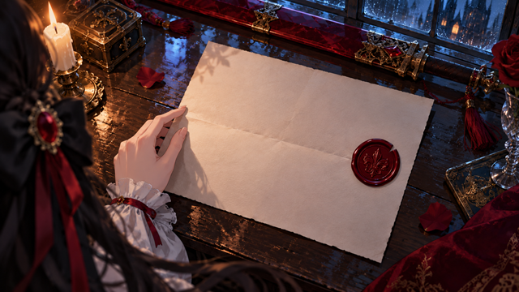
cg-01a · 两封矛盾的命令·遗书1672×941 → 3840×2160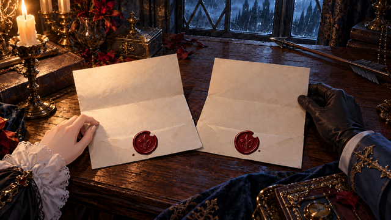
cg-01b · 两封矛盾的命令·密令1672×941 → 3840×2160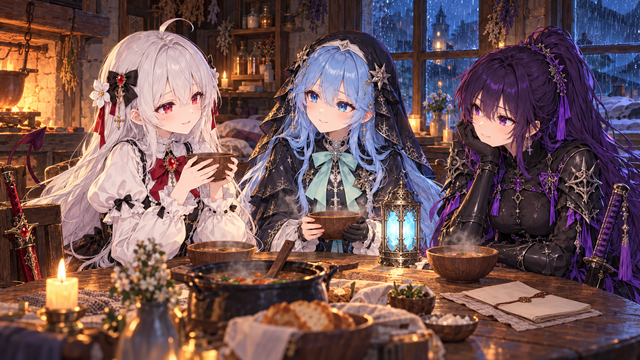
cg-02 · 一碗热汤1672×941 → 3840×2160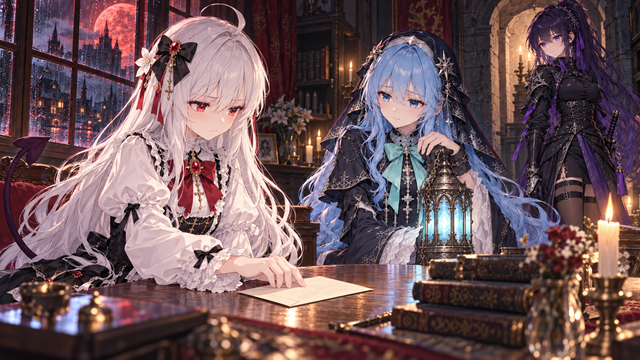
cg-03 · 第二封信1672×941 → 3840×2160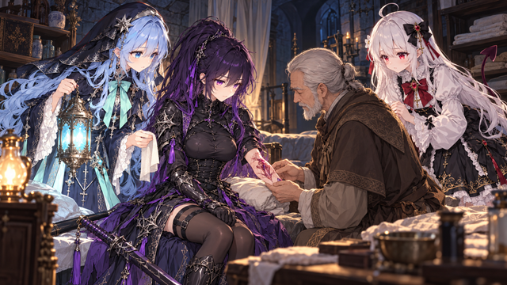
cg-04 · 医师与旧伤1672×941 → 3840×2160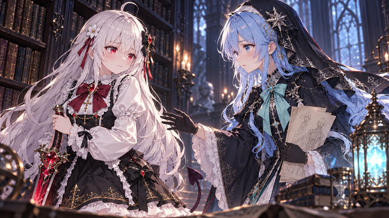
cg-05 · 不肯交出的剑1672×941 → 3840×2160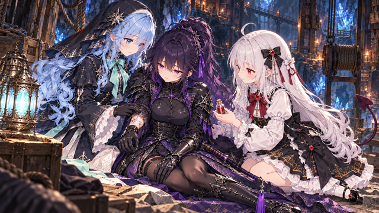
cg-06 · 换你扶住她1672×941 → 3840×2160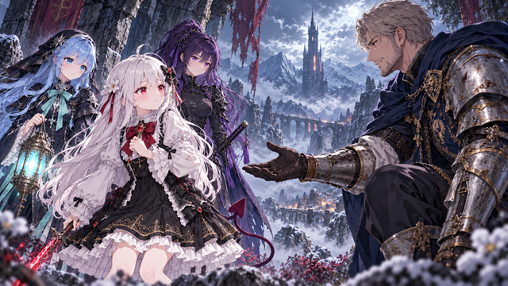
cg-07 · 伸过来的旧护手1672×941 → 3840×2160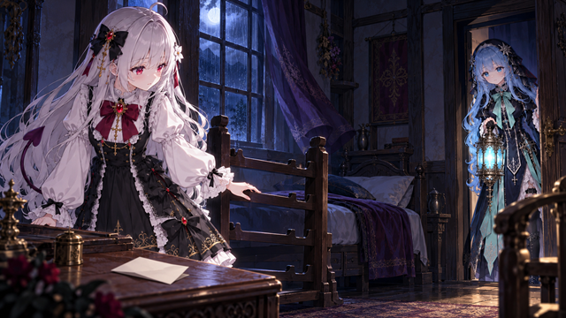
cg-08 · 空着的剑架1672×941 → 3840×2160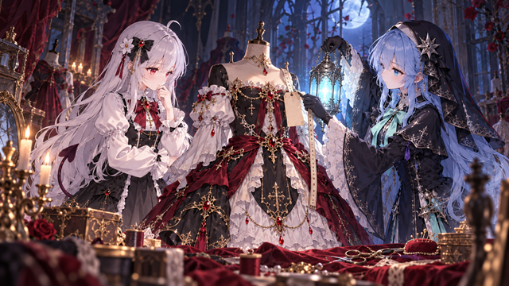
cg-09 · 为你备好的新衣1672×941 → 3840×2160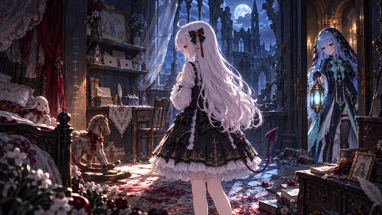
cg-10 · 十年前的房间1672×941 → 3840×2160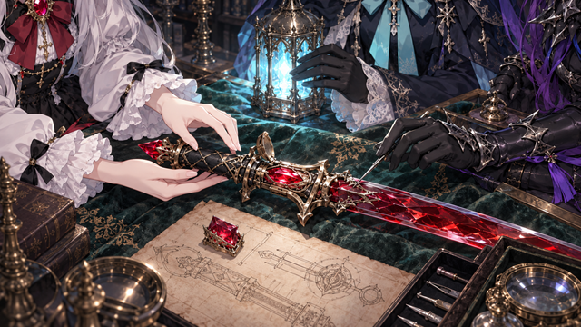
cg-11 · 礼物里的契印1672×941 → 3840×2160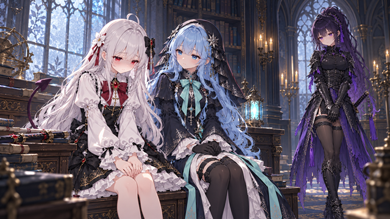
cg-12 · 她送我的时候就知道1672×941 → 3840×2160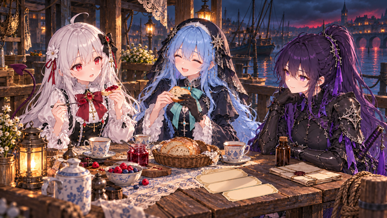
cg-13 · 三张船票与果酱1672×941 → 3840×2160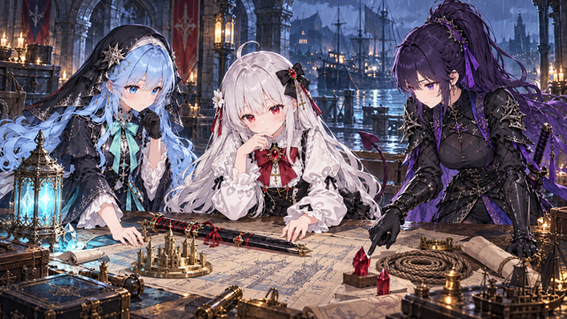
cg-14 · 三个人的计划1672×941 → 3840×2160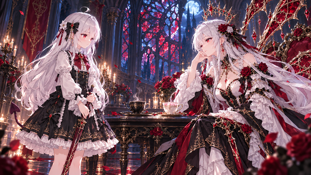
cg-15 · 两只杯子1672×941 → 3840×2160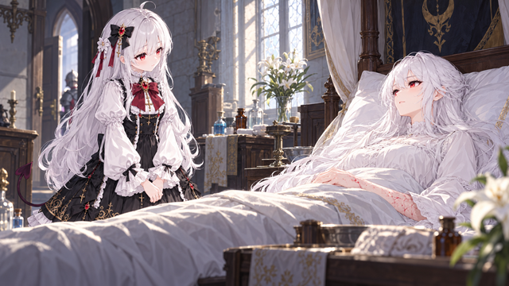
cg-16a · 病房里的提问1672×941 → 3840×2160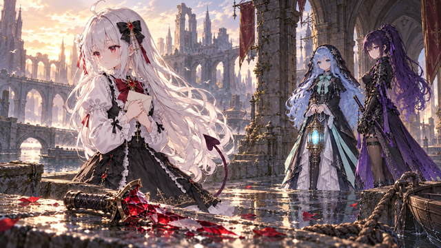
cg-16b · 留在水门的剑1672×941 → 3840×2160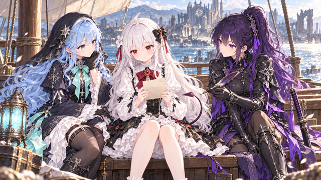
cg-17 · 信的背面1672×941 → 3840×2160